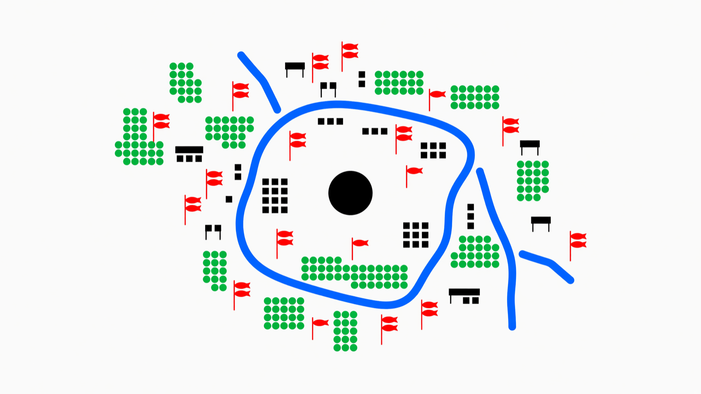
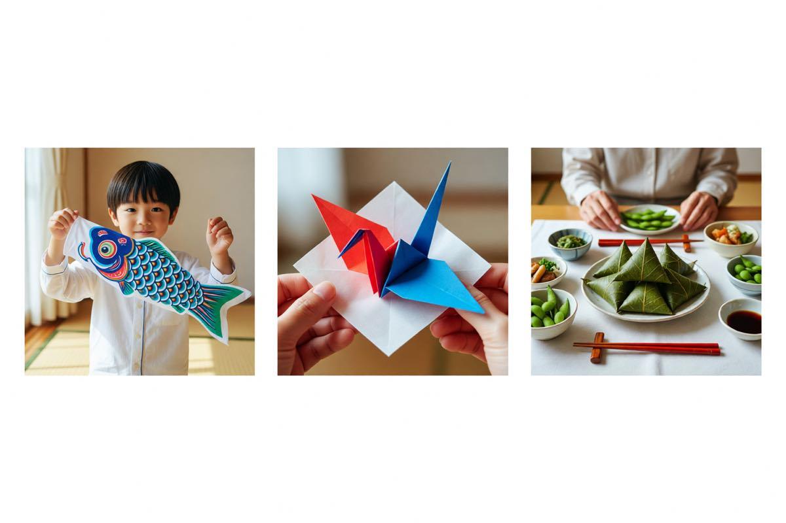

What to wear
The festival grounds are open and unshaded. The river wind is cool before the sun is high.
- A light jacket for the morning
- A hat and water for midday
- Comfortable shoes — the path is paved but long
A companion to the celebration — the complete programme, a guide to the customs, a map of the festival grounds, the family album, and a way to let us know you're coming.
The complete schedule for May 5. Times are local; the gates open at 06:00 and close at 22:00. Workshops and food stalls run rain or shine.
| Time | What | Where | |
|---|---|---|---|
| 06:30 |
Pole raising Opening
Families across the neighbourhood set the bamboo and string the streamers before the wind picks up.
|
Neighbourhood streets | |
| 07:30 |
Shobu bath
Iris leaves placed in the public bath. The word shobu shares a sound with the spirit of victory.
|
Sentō bath house, east side | |
| 09:00 |
Opening ceremony Ceremony
Sake barrel opening, children's chorus, and the first kite of the season.
|
Main stage | |
| 10:00 |
Koinobori raising workshop
Hands-on workshop — string your own small streamer to take home. Materials provided.
|
Craft pavilion | |
| 11:00 |
Kashiwa mochi workshop Food
Wrapping with the pastry makers from the Asano family. Limited to 24 seats per session.
|
Food pavilion | |
| 12:30 |
Children's taiko
A short performance by the Asano Ward children's taiko group.
|
Main stage | |
| 14:00 |
Shobu iris walk Family
Guided tour of the iris beds along the river, with readings of classical poetry.
|
Riverside garden | |
| 15:30 |
Origami crane folding
A drop-in session for all ages. Paper and instruction provided.
|
Craft pavilion | |
| 17:00 |
Kabuto display
A walk-through of antique samurai helmets from the Asano family collection.
|
Heritage hall | |
| 17:30 |
Evening lantern release Closing
Paper lanterns set on the water as the carp streamers are taken down for the year.
|
Riverbank | |
| 19:00 |
Bon odori
Open dancing around the central yagura tower. All ages; instruction provided.
|
Central plaza | |
| 21:00 |
Closing
The lanterns drift downstream. The streamers come down. The day is done.
|
Riverbank |
Three things to know before you come — what to wear, what to eat, and how to join in without getting in the way.
The festival grounds are open and unshaded. The river wind is cool before the sun is high.
The festival table is small, deliberate, and shaped by the season.
The day is for everyone. A few small courtesies keep it that way.
The celebration spreads across the riverside park and the streets that lead to it. The map below marks the four key areas — stages, food, crafts, and the riverbank lantern release.

A small album from the 2025 celebration — the morning pole raising, the afternoon workshops, and the evening lanterns on the water.

The Asano family raises their streamers at 06:30, before the wind picks up.
A workshop at the food pavilion — 24 seats, three sessions, all full.
The closing ceremony at 17:30 — paper lanterns drifting downstream.
RSVPs are not required for the festival itself, but they help us plan the workshops and the lantern release. Pick a session and we'll save you a seat.
Workshops are capped at 24 seats per session. The lantern release is open to all — but if you'd like a lantern of your own, tell us here and we'll have one ready at the gate.